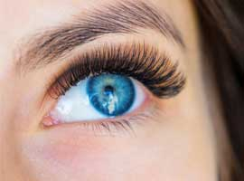
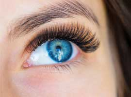

В чем особенность нарощенных ресниц?
Длительный эффект
В среднем нарощенные ресницы будут выглядеть превосходно в течение 2-4 недель. Зависит это от нескольких факторов. Большое значение имеет тип кожи: если она жирная, перенаращивание делается чаще. Также немаловажными аспектами являются профессионализм мастера, соблюдение технологии наращивания и материалы (клей, реснички). И если первый фактор от нас не зависит, то все остальные мы берем на себя.Экономия времени и денег
Большинство женщин наносит макияж каждый день, иногда даже не один раз, когда нужно повседневный образ сменить на вечерний. Это требует немало времени, к тому же надо тратить деньги на покупку туши и средства для ее снятия. Нарощенные ресницы не требуют нанесения макияжа, они позволяют женщине всегда выглядеть так, будто она целый час провела у зеркала. Эта особенность искусственных ресниц очень нравится тем женщинам, которые часто не успевают накраситься. Таким девушкам приходится делать это либо очень быстро, либо в свободные минуты на работе, что часто выходит не слишком красиво и аккуратно. Благодаря наращиванию ресниц можно вообще не пользоваться косметикой, по крайней мере тенями для глаз, так как лицо уже будет выглядеть очень эффектно. Более того, полный отказ от косметики поможет сохранить нарощенные ресницы дольше.100% уверенность в себе
Некоторые женщины без косметики ощущают себя недостаточно красивыми из-за чего падает их самооценка. Многие вообще боятся куда-либо идти без макияжа. Нарощенные ресницы сами по себе создают эффект безупречного макияжа, делают черты лица более четкими, подчеркивают выразительный взгляд.Невероятно красивый, завораживающий взгляд
Именно ради этого женщины и стремятся нарастить реснички. Взгляд становится удивительно выразительным, не обратить внимания на такую женщину просто невозможно.
носятся 3-4 недели
и дольше
не вызывают
аллергий и
покраснений глаз
 не вызывают
тяжести и
дискомфорта
не вызывают
тяжести и
дискомфорта
не боятся воды и
высоких
температур
 безопасны для здоровья
своих ресниц
безопасны для здоровья
своих ресниц
 

Отзывы
Диана Рыбакова
Ксения, без ума от ресничек, делала впервый раз, но довольна всем. Результат действительно превысил все ожидания. Спасибо за Вашу качественную и быструю роботу)
Ольга Тарасенко
Ксения, без ума от ресничек, делала впервый раз, но довольна всем. Результат действительно превысил все ожидания. Спасибо за Вашу качественную и быструю роботу)
Катерина Артеева
Ксения, без ума от ресничек, делала впервый раз, но довольна всем. Результат действительно превысил все ожидания. Спасибо за Вашу качественную и быструю роботу)
Анна Пономарева
Ксения, без ума от ресничек, делала впервый раз, но довольна всем. Результат действительно превысил все ожидания. Спасибо за Вашу качественную и быструю роботу)
Жанна Самойленко
Ксения, без ума от ресничек, делала впервый раз, но довольна всем. Результат действительно превысил все ожидания. Спасибо за Вашу качественную и быструю роботу)